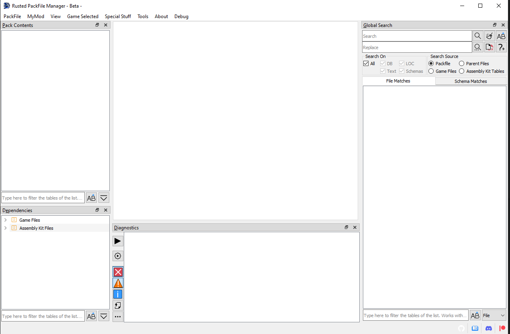
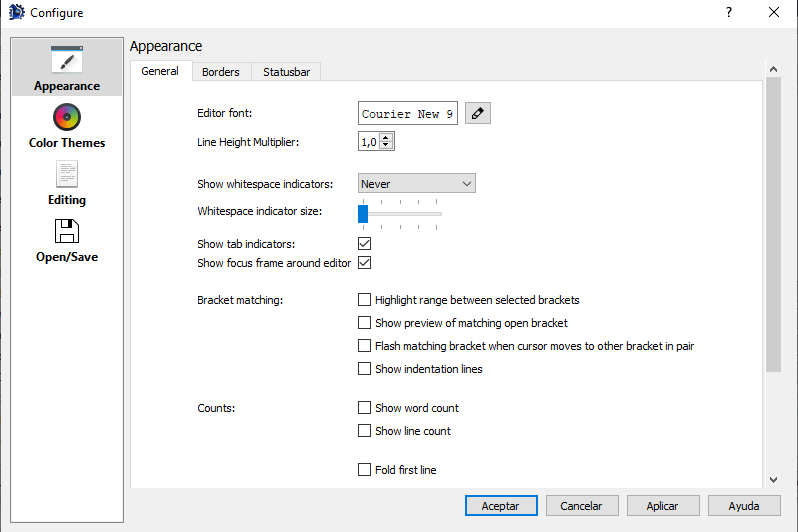
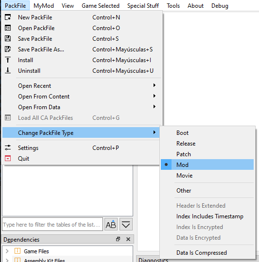
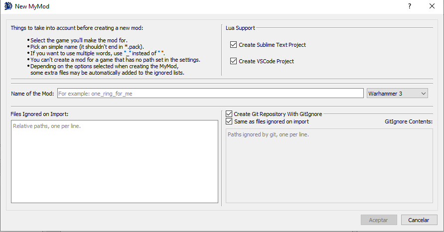
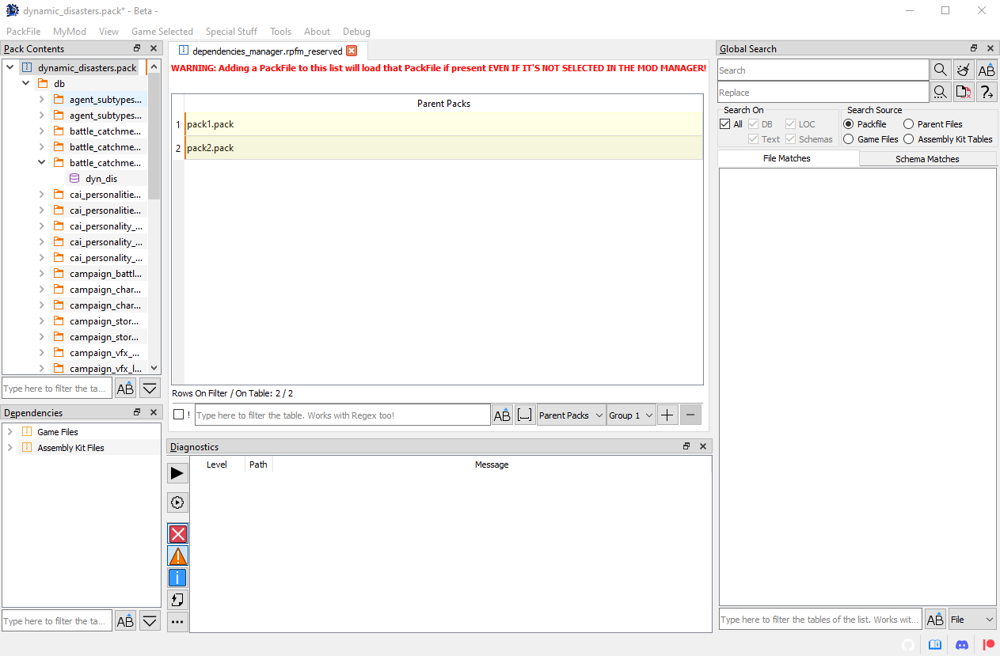
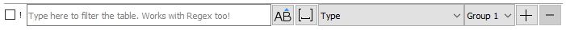
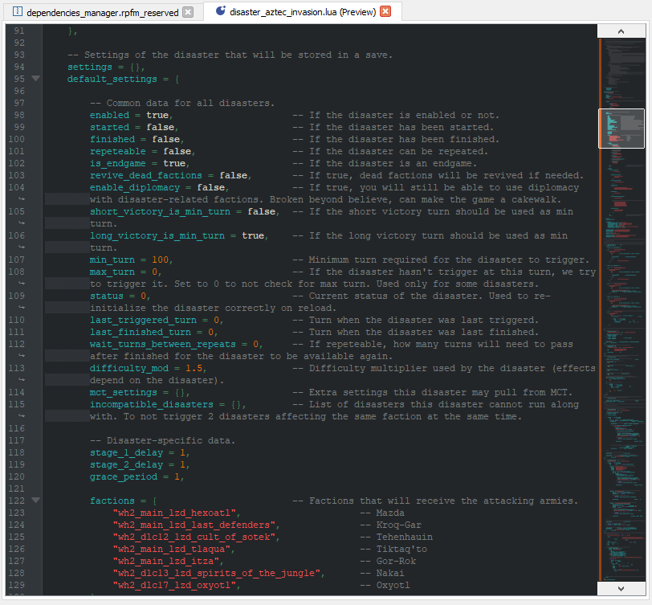
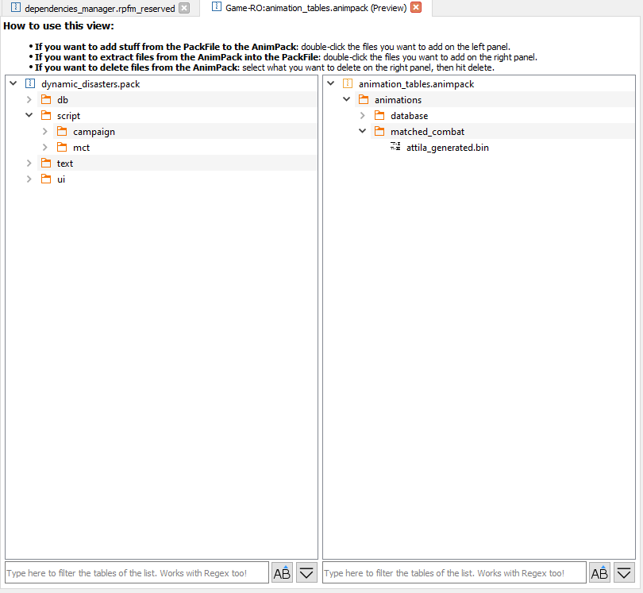
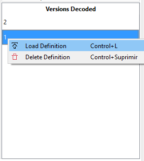

What's RPFM?

This is Rusted PackFile Manager, a.k.a. RPFM, a modding tool for modern Total War Games.
Before explaining what it does, a little explanation on how modding works in Total War games since Empire is due. Since Empire, most of the data of Total War games is in .pack files, packed together so it's faster to read for the game. Those .pack files are containers. Inside them there are a ton of files with the actual data of the game. Some of those files are:
- DB Tables: contains most of the modable stuff of the game, like unit stats, building info,.... They are always in the folder
db/whatever_tables/table_file. - LOCs: contains the actual text you see on the screen when playing the game. Yeah, all those letters are not unicorn magic. It's hard to believe, I know, but it's true.
- Lua/Txt/Xml/...: plain text files. Not rocket science.
- RigidModels: the files with the actual 3D models of almost everything you see in the game, like units, monsters,....
- Images: icons, textures, etc....
- ESF Starpos: these are like a snapshot or savegame that gives the game all the info of how everything in the campaign map should be at the start of the campaign. Like what provinces are where, what armies are in X place with Y units....
Now, how it's modding done in modern Total War Games? By creating a mod PackFile, adding some of those files, changing them, and then telling the launcher to use that mod with the changes you did. Simple isn't? Now, what is RPFM? It's a program that let's you create and edit those PackFiles, allowing you to edit the tables, locs,... inside them too. That's more or less what it is.
But hey, isn't this familiar? If you have modded a modern Total War game, yep. RPFM it's a complete reimplementation in Rust and Qt5 of the old PackFile Manager, because PFM it's slow, buggy, and was unmaintained for more than half a year before someone picked it up. If you've used PFM before, you can see it has a similar UI, and most of the features are in the same place, or close by. It's done that way to make it easier to use for modders coming from PFM.
So, you want to give it a try? Then read the section, as without it most of the Advanced Features RPFM has are disabled. And remember, you can always access this documentation in the
About menu, by clicking on Open Manual.
Initial Configuration

After we start RPFM for the first time, we have to configure a couple of things.
First, it should promt you to update your schemas/templates. Hit yes. Schemas and templates some extra files used for some features of RPFM, which we'll explain later. For now, just remember you should always have them up-to-date.
Then, we need to go to PackFile/Preferences, and the window above this will popup. It seems like a lot of new stuff to know, but it's really simple. First the paths:
XXX folder: These are the folders where your games are. Not where /data is, but WHERE THE .EXE IS!!! RPFM uses them for plenty of things, so remember to set them for the games you have.MyMod's folder: it's the path where your MyMod will be stored. MyMod are explained in a later chapter of this documentation, so for now you just need to know that it's a path RPFM will use to store stuff for your mods. Set it pointing to an empty folder.7-Zip Folder: if you have 7-Zip installed, put here the folder where the 7-Zip exe is. This is needed to support compression. Without it, if you try to compress a PackFile, it'll fail.
Next, all those checkboxes. You can get an explanation about what they do just by hovering them with the mouse, like this.

Next, the Text Editor button. This controls all the settings relative to the text editor, including his theme.

And finally, the Shortcuts button. Hitting it will open the Shortcuts window, where you can see and edit all the shortcuts currently used by RPFM.

Just keep in mind that some of the shortcuts are applied when the program starts, so you'll have to close and re-open RPFM for the changes to take effect.
When you're done with the settings, just hit Save. You can restore them to the defaults with the button of the left (same for the shortcuts with their Restore Defaults button). One thing to take into account is that, if any of the paths is invalid, RPFM will delete it when hitting Save.
Now the last step. This is optional, but recommendable and it requires you to have the Assembly Kit for your games installed. We have to go to Special Stuff and, for each game we have, hit Generate Dependency Cache. This will create a special file that will help RPFM with reference data for table columns. It's not enabled for Empire and Napoleon for now, but it should work for every other game.
With that, we have completed the initial configuration. So now that we're done configuring RPFM, let's take a look at the features it has to offer.
Buttons and What They Do
In this chapter we will check every freaking general use button and hidden action RPFM has (PackedFile-specific actions are in their respective chapter), so you don't have to ask what they do. Just remember that, in addition to this chapter, you can hover with the mouse over almost every button in RPFM and in the status bar at the bottom will appear a short message explaining what the button do.
Ere we go!
Menu Bar
First, the top Menu bar. It has five menus in it, that'll be explained in the following chapters. But to give you an idea of what we have:
PackFile: It's where all the basic stuff likeNew,OpenandSaveis. Pretty straightforward.MyMod: It's where all the stuff related with the use of theMyModfeature is.View: It's where you can hide/show certain panels of the UI.Game Selected: It's where you select the game you are modding the current PackFile for if RPFM failed to select it for you.Special Stuff: It's where weird stuff goes.Templates: It's for templatizing mods. Incomplete, do not use it.About: It's where you go when you want to read this documentation, check the Patreon, or check what version of RPFM you have.Debug: Stay away from this. And now, let's begin!
PackFile Menu

Here, we can find the basic actions:
New PackFile: Creates a new PackFile outtanowhere.Open PackFile: Opens one or more PackFiles in RPFM.Save PackFile: Saves the changes done in a PackFile to disk.Save PackFile As: Saves the current PackFile with another name.Preferences: Open the Preferences window.Quit: Makes you enter in a lottery. Seriously.
And some more... specific ones:
Install: Copies the currently open PackFile to the data folder of the game.Unistall: Removes the currently open PackFile from the data folder of the game.Open Recent…/xxx.pack: Open a recently open PackFile.Open Recent…/xxx.pack: Open a recently open PackFile.Open From Content…/xxx.pack: Open the selected PackFile from the Content folder (Workshop mods) of the game. Requires the game's path to be configured.Open From Data…/xxx.pack: Open the selected PackFile from the Data folder of the game. Requires the game's path to be configured.Open From Autosave…/xxx.pack: Open the selected PackFile from the Autosave folder. The autosaves are sorted from newest to oldest, so if you want to load the last autosave done, pick the first one.Load All CA PackFiles: Creates a fake PackFile in memory and tries to load into it all the data from every Vanilla PackFile of the game. Keep in mind that this takes a while.Change PackFile Type: Allows you to change the open PackFile's Type and configure some options for it.
About the PackFile Types, it's what the game uses to load in order all the data of the game. There are the following types, in the order the game will load them:
Boot: Used by boot.pack. Not useful for modding. First to load.Release: Used by most of CA PackFiles. Not useful for modding.Pactch: Used by some CA PackFiles, specially in Shogun 2 and older games. Not useful for modding.Mod: Used by most mods. This is the one you'll mostly use.Movie: Used by some CA PackFiles and some specific mods. Useful for modding. Last to load.Other: Something for RPFM to categorize unrecognized types. Never use it.
There are also a few more options to configure a PackFiles under this menu:
Header Is Extended: The header of the PackFile is extended (only seen in arena).Index Includes Timestamp: There is a timestamp, maybe a Last Modified Date in the index of the PackFile.Index Is Encrypted: The index of the PackFile is encrypted.Data Is Encrypted: The data of the PackFile is encrypted.Data Is Conpressed: The data of the PackFile is compressed.
About these options, just take into account that any PackFile with any of these options enabled (except Data Is Compressed) will NOT BE RECOGNIZED as a mod by the launcher. And RPFM doesn't support saving PackFiles with Index Is Encrypted, Data Is Encrypted or Header Is Extended enabled.
And, if you don't enable Allow Editing of CA PackFiles, RPFM will not let you save Boot, Release or Patch PackFiles.
And with that, we finish the PackFile Menu. Next, the MyMod menu.
MyMod Menu

MyMod is a feature to help modders keep their mod's data organized. The system is almost a 1:1 clone of PFM's MyMod feature so it should be easy to use for veterans too.
For those new with the concept, remember that MyMod folder we set in the settings? When we create a MyMod, in that folder will be created a folder for the game the mod's for (if it didn't exist before), and inside that there will be a PackFile and a folder, both with the name of your mod. Each time you extract something from the PackFile, it'll be automatically extracted in his folder, mirroring the structure it has in the PackFile. For example, extracting a table will result in the table being extracted at mymod_folder/db/table_name/file. Adding Files/Folders from the MyMod folder will also add them mirroring the path they have. For example, adding a file from mymod_folder/db/table_name/file_ will add the file in PackFile/db/table_name/file.
This makes easier to keep track of the mod files, and you can even put that folder under .git, or any other version control system, as you can have an unpacked mod that you can pack with a single click (well, a few clicks).
The MyMod Menu has the following buttons:
Open MyMod Folder: Opens theMyModfolder in your default file explorer.New MyMod: It opens theNew MyModDialog. It's explained under this list.Delete Selected MyMod: It deletes the currently selectedMyMod. This cannot be undone, so you'll got a warning before doing it.Import: Import the content of theMyModfolder of the currently openMyModPackFile into said PackFile.Export: Extract the currentMyModPackFile into itsMyModfolder.XXX/yourmod.pack: Open your previously createdMyModto edit, delete, install,.... whatever you want, baby!
When we click on New MyMod, the following dialog will appear:

Here you can configure the name and game the mod is for. Once you're done, hit Save and your new MyMod will be created and opened.
And lastly, a couple of aclarations:
- To be able to use
Import/Exportyou need to have yourMyModopen. - Only
MyModPackFiles opened fromXXX/yourmod.packwill enjoy theMyModfeatures, like keeping the paths when adding/extracting files. Manually openedMyModPackFiles will be treated as regular PackFiles.
View Menu
In this menu you can hide/show certain panels of the UI:
PackFile Contents: That thing on the left with files and folders on it.Global Search: A panel to search stuff through the entire open PackFile.Diagnostics: A panel to show diagnostics results of the entire open PackFile.
Game Selected Menu

In this menu you can change the currently selected game. When opening PackFiles, RPFM tries to be smart and auto-select a game, but there are some PackFiles that are the same between games (for example, Attila and Warhammer 1 PackFiles are identical), so... just make sure the right game is selected after opening a PackFile, as that affects how many parts of the program work. The complete list of supported games is:
Three Kingdoms: Full Support.Warhammer 2: Full Support.Warhammer: Full Support.Thrones of Britannia: Full Support.Attila: Full Support.Rome 2: Full Support.Shogun 2: Full Support.Napoleon: Almost Full Support. MissingGenerate PAK Filesupport.Empire: Almost Full Support. MissingGenerate PAK Filesupport.Arena: Read-Only Support for PackFiles. Incomplete schema.
Also, at the top we have a couple of convenient buttons to open certain folders on the default file manager of your system:
Launch Game Selected: A quick shortcut to launch the currently selected game.Open Game's Data Folder: Open your currently selected game's data folder, if it has his path configured in the settings.Open Game's Assembly Kit Folder: Open your currently selected game's assembly kit folder, if it has his path configured in the settings. Only for Rome 2 and later games.Open RPFM's Config Folder: Open the config folder of RPFM, which contains configs, shortcuts, schemas, crashlogs, porn,....
Special Stuff Menu

This menu contains... special features implemented for specific games. Basically, any feature that doesn't really fit in any other place goes here. Here we have:
Patch SiegeAI: used in Warhammer 1 & 2 for creating siege maps that the AI can handle. Basically, make your map with the stuff required for the AI to work, and then patch his PackFile with this.Optimize PackFile: reduces the size of your PackFile and increase its compatibility with other mods by cleaning certain stuff on your packfile:- DB: Removes unchanged rows from vanilla. If table is empty, it removes it. Ignore files called the same as the vanilla ones (unless you disable that in the settings).
- Loc: Removes unchanged rows from vanilla.
- Xml: Removes xml files under the
terrain/tilesfolder, as those are leftovers of Terry's exports..
Generate Dependencies Cache: generates a cache used for things like dependency checking, diagnostics, .... Doesn't work for Empire and Napoleon, yet.
There's also a Rescue PackFile feature that you SHOULD NOT USE UNLESS INSTRUCTED.
About Menu

Pretty simple and straightforward menu:
About QT: Shows info about the version of Qt (the framework RPFM uses for the UI) in use.About RPFM: Shows info about the version of RPFM in use, and the credits.Open Manual: Opens this manual on the web browser you have as Default.Support me on Patreon: Open RPFM's Patreon page. In case you want to contribute with money or you want to check the dev blogCheck Updates: Checks if there is a newer version of RPFM available.Check Schema Update: Checks if there is any newer version of RPFM's Schemas available and downloads it.
The Schemas I talked in the last point are what allows RPFM to decode and open the tables of all the supported games. Newer schemas means more tables to open. It's very common that after an update a few tables change his structure and are no longer decodables. To get them to work again, the schema has to be updated.
And that's all for the top Menu Bar. Now we'll take a look at the thing you're going to use the most (or almost the most): the TreeView.
Debug Menu
Stay away from this.
PackFile TreeView

That thing on the left with folders and stuff is the PackFile's TreeView. That's where all the files inside your PackFiles will show up. If you don't like it there, it can be moved elsewere, or even closed. When you Right-Click on any of them, this context menu will show up:

These are the actions you can use to alter the PackFile. Each one of them has a hotkey, in case you're a lazy bastard. These are all the actions in the menu:
Add…/Add File: Allows you to add one or more files to the PackFile.Add…/Add Folder: Allows you to add a folder and all his files to the PackFile.Add…/Add from PackFile: Allows you to add files or folders from another PackFile to your PackFile. Just, select whatever you want to add, double click it and it'll be added to your PackFile, keeping his path.Create…/Create Folder: Allows you to create an empty folder. Due to how PackFiles work empty folders are not saved so, if you want to keep the folder, add a file to it. Supports relative paths.Create…/Create AnimPack: Allows you to create an empty AnimPack.Create…/Create DB: Allows you to create an empty DB Table.Create…/Create Loc: Allows you to create an empty Loc PackedFile. You can create his relative path too writing something likefolder1/folder2/fileinstead of just the file name.Create…/Create Text: Allows you to create an empty text file. ANY TEXT FILE (including lua, xml,...). You can create his relative path too writing something likefolder1/folder2/fileinstead of just the file name.Create…/Create Queek File: Allows you to create a file based on the context. The current contexts where this works are:db/x_tables: It creates a new empty db table of the last version supported by the game selected.text/: It creates a loc file.scripts/: It creates a LUA script.variantmeshes/variantmeshdefinitions/: It creates a variantmesh file.
Create…/Mass-Import TSV: Allows you to import a bunch of TSV files at once. The system is able to distinguish between DB and Loc TSV files, so you can import all of them at the same time, and RPFM will create all the files needed, in their correct place.Create…/Mass-Export TSV: Allows you to export as TSV every DB Table and Loc PackedFiles in your PackFile at once.Open…/Open with Decoder: Allows you to open a table in thePackedFile Decoder. Only used to decode new tables, so…. You shouldn't touch this.Open…/Open Dependency Manager: Allows you to open the list of dependencies included in the PackFile. Check the next chapter to learn what thisDependency Managerthing is about.Open…/Open Containing Folder: Allows you to open the folder where your open PackFile is (if it's on disk) with the default file manager of your system.Open…/Open PackFile Settings: Allows you to open the PackFile-specific settings of the currently open PackFile.Open…/Open with External Program: Allows you to open a PackedFile with an external program. For tables and locs, some internal magic is done so they're openable in excel/calc/the program your tsv files open with.Open…/Open Notes: Allows you to open a Notes panel, to random stuff related to the PackFile.Rename: Allows you to rename whatever is selected, except the PackFile.Delete: Allows you to delete whatever is selected. If the PackFile is selected, it removes every file from it.Extract: Allows you to extract whatever is selected out of the PackFile. If whatever you selected is compressed/encrypted, RPFM will decompress/decrypt it before extracting, so the resulting file is usable.Copy Path: Allows you to copy the selected item's path to the clipboard.Merge Tables: Allows you to merge multiple DB/LOC Tables into one.Update Table: Allows you to update the structure of a table to the latest one one used by the game selected.
Additionally, with the shortcuts Ctrl++ and Ctrl+- you can expand/collapse the entire TreeView. This action is shortcut only, it's not in the Contextual Menu.
Keep in mind that the availability of these actions depends on what is selected, and on the currently loaded schemas. For example, you can't add anything if you have selected a PackedFile. Also, keep in mind that if there is a MyMod loaded, some of these actions may work different.
Also, when you add/modify a file, it's marked in the TreeView with the following colour code:
- Green/Dark Green : added file.
- Yellow/Dark Yellow : modified file.
- Magenta/Dark Magenta : added AND modified file.
This colour code is applied to the parents too, up to the PackFile, so you easily know what you changed since the last time you saved the PackFile.
And last, the TreeView Filter. It's that thing with buttons at the bottom of the TreeView. It allows you to filter the contents of the TreeView by a pattern (Works with Regex!). The buttons below the filter bar where you write the pattern are:
Auto-Expand Matches: automatically expand all the matched folders/files. This combined with a ton of matches (empty pattern and +60k files in data.pack) can hang the program for a while, so be cautious on when do you use it.AaI: the case sensitive button. Not too much to explain here.
Dependency Manager

The Dependency Manager allows you to modify a special list of PackFiles saved inside your mod's PackFile. When starting the game, the launcher will try to load the PackFiles in this list BEFORE your PackFile. If a PackFile is not found, it'll be ignored. This list can be used to hardcode dependencies into your PackFile. In his Contextual Menu (right-click) you can find more or less the same commands of a DB Table.
PackFile Settings
PackFile Settings are a list of PackFile-specific settings, that can change some of RPFM behaviors only for the currently open PackFile. They're kept inside the PackFile, so every time you open that PackFile again, they will be re-applied. The list of settings goes as follows:
-
PackedFiles to Ignore on Diagnostics Check: The list of PackedFiles that will be ignored when performing a diagnostics check. You can ignore entire folders, individual PackedFiles, specific columns of individual PackedFiles and specific diagnostics on individual PackedFiles. The format is as follows:
db/land_units_tables=> All tables in that folder will be ignored.db/land_units_tables/table1=> That exact table will be ignored.db/land_units_tables/table2;field1,field2=> Only those two fields of that specific table will be ignored.db/land_units_tables;field1,field2=> Only those two fields of all tables in that folder will be ignored.db/land_units_tables/table1;;DiagId1,DiagId2=> Only those two diagnostics for that specific table will be ignored.- Comment lines should start with
#. - The diagnostic keys used to disable specific diagnostics are:
OutdatedTable=> Outdated table.InvalidReference=> Invalid reference.EmptyRow=> Empty row.EmptyKeyField=> Empty key field.EmptyKeyFields=> Empty key fields.DuplicatedCombinedKeys=> Duplicated combined keys.NoReferenceTableFound=> No reference table found.NoReferenceTableNorColumnFoundPak=> No reference Table/Column found.NoReferenceTableNorColumnFoundNoPak=> No reference Table/Column/Dependencies found.InvalidEscape=> Invalid escape.DuplicatedRow=> Duplicated row.InvalidLocKey=> Invalid Loc Key.TableNameEndsInNumber=> Table name ends in number.TableNameHasSpace=> Table name has spaces.TableIsDataCoring=> Table is datacoring.FieldWithPathNotFound=> Path/File in field not found.InvalidDependencyPackFileName=> Invalid dependency PackFile.InvalidPackFileName=> Invalid PackFile Name.
-
Files to Ignore when Importing: Paths here will be ignored when importing into a MyMod.
-
Disable Autosaves for this PackFile: For big PackFiles.
Notes

Notes is a system of simple notes stored in the PackFiles. It's just a way to keep non-standard things (like "this column is for X, remember it when changing Y!") in your PackFiles. You can have one note per PackFile. Use it for whatever you want.
Global Search

Global Search allows you to perform a simple search (accepts Regex) across every DB/Loc/Text PackedFile inside your PackFile (and the schema of the currently selected game), providing you with a filterable list of results in the right of the screen.
Pretty straightforward, just some notes:
- The search field will turn red/green depending if your text is a valid regex or not (if you enabled the regex option).
- Replacing a result will close its PackedFile if open (To be fixed in a future update).
- Schema fields are not replaceable.
Diagnostics Panel

Diagnostics panel allows you to quickly identify possible problems in your mod, so you can fix them before they're reflected in-game.
It's pretty simple. From left to right:
Check PackFile: Performs a diagnostics check over the entire PackFile. If the relevant settings are enabled, this is done automatically on PackFile opening too.Check Open PackedFile: Performs a diagnostics check over the open PackedFiles, leaving the results of the other PackFiles as they are.Error: Enable showing error diagnostics.Warning: Enable showing warning diagnostics.Info: Enable showing info diagnostics.Open PackedFiles Only: Filter the diagnostics list to show only the diagnostics relevant to the open PackedFiles.Show more filters: Shows a toggleable list of per-diagnostic filter, for more granular filtering.
To know more about what each diagnostic means, hover the mouse over them and you'll get an explanation of what it means. Also, double-clicking them will led you to the relevant place where they are being detected.
PackedFiles
As explained before, RPFM can not only edit the PackFiles of modern Total War Games, but it can also edit the Files inside them (PackedFiles) without the need of extracting them. Ín this section we'll see what PackedFiles can RPFM see/edit.
DB Tables

DB Tables are where most of the moddable data of the games is. For example, unit stats, faction colors, buildings info,... RPFM has a complete integrated editor for them. The screenshot above is how a DB Table looks in RPFM when opened.
The editor includes cross-table references, which means that, if one column references another table, you'll get a combo when editing that column with data to input from the other table. Also, if you hover over the header of any column that references another table, is referenced on another table, or has a description in the schema, you can see in the tooltip the column's special info.
Key columns are also marked with a slightly yellow background for recognition.
All columns are also movable, so you can rearrange them however you want, and numeric columns (except long integer columns) have a numeric-only editor. And you can sort the table by one column one way or another, or remove the sorting with a third click in the column title.
At the bottom of the window you have a real-time filter. Select the column you want to use to filter, if you want it to filter as Case Sensitive, and just write and see how the table gets filtered as you type. It works with Regex too. For example, the following will only show up the rows that contain in their Key column v_b or fake:

Here you have a Regex Cheatsheet in case you want to use more complex filters: https://www.cheatography.com/davechild/cheat-sheets/regular-expressions/
Also, you can add more filters with the + button, and make multi-column filters. You can even have multiple groups of multi-column filters to more accurate filters.
Now, with the Right-Click (or Contextual) Menu:

These are all the actions available for DB Tables:
Add Row: Appends an empty row at the end of the table.Insert Row: Inserts an empty row after every row with a selected cell.Delete Row: Uses the computational power of your GPU to mine cryptocurrencies. Joking, it deletes any row with a selected cell.Delete Filtered-Out Row: It deletes any row not in the current filter.Clone…/Clone and Insert: Creates a duplicate of every row with a selected cell and inserts the duplicate just below the original row.Clone…/Clone and Append: Creates a duplicate of every row with a selected cell and appends the duplicates at the end of the table.Copy …/Copy: It copies whatever is selected to the Clipboard, in a format compatible with Excel, LibreOffice Calc and others.Copy …/Copy as LUA Table: It copies the entire table as a Lua "Map<String, Vector<data>>" if the table has a key field, or as a series of Vectors if it hasn't, ready to paste it in a script. For scripters.Go To …/Go To Definition: If the first cell of the selection is a reference to another table, it tries to open the referenced table. If Dependencies cache has been generated, it'll even open tables from data.pack or equivalent in read-only views.Go To …/Go To Loc Entry: It tries to open the loc file containing the loc entry relevant for the selected row, if exists. If Dependencies cache has been generated, it'll even open locs from /data in read-only views.Paste: It tries to paste whatever is in the Clipboard to the selected cells. It does some clever things while pasting:- If only one cell was copied, it pastes it in all selected cells.
- If only a few cells of a row were copied, and the amount of copied cells equals the amount of selected columns, it pastes the first item in every cell in the first selected column, the second item in every cell of the second selected column,...
- If none of the above, it defaults to a normal paste.
Paste as New Row: It allows you to paste the contents of the clipboard as a new row, appended at the end of the table.Generate IDs: Allows you to generate a sequence of consecutive ids for the selected cells.Rewrite Selection: Allows you to rewrite the contents of a complete selection with whatever you want. It also allows for some limited numeric operations.Invert Selection: Inverse the selection state of all cells on the table.Reset Selection: Reset all selected cells to the value they had when the table was initially open.Resize Columns: Resize all the columns to fit their contents.Import TSV: Allows you to import a TSV file to the table, overwriting whatever the table currently has. IT'S NOT COMPATIBLE WITH PFM TSV FILES.Export TSV: Allows you to export the table as a TSV File, compatible with Excel, Calc….Search: Open the Search & Replace panel, that you can use to search any text pattern you want in the table, and replace it if you want. It works in combination with the filter, so you can even do more precise searches combining them!Sidebar: Open a sidebar where you can select what columns hide/show and freeze/unfreeze.Rename References: Allows you to rename in cascade all references to a key at once.Undo: Allows you to undo… almost every action done in the table. Even TSV Imports.Redo: Allows you to undo every undo action. This goes deeper into the rabbit hole…
Tables uses the same colour code for cells and rows as the TreeView. And that's more or less what you can do with a DB Table.
Apart of these, the Del key in DB Tables acts as an Smart Delete key. This means depending on what you have selected when you press Delete it'll delete:
- If you have selected random cells, it'll delete their contents.
- If you have selected a full row , it'll delete the row from the table.
- If you have a combination of both , it'll delete rows where all cells are selected, and it'll delete the contents of the cells where not all cells in a row are selected. Fancy.
One thing to take into account is that if you want to write multiple lines in a cell (for example, for multiple paragraphs in one single cell) you can write \\n and RPFM will take care of saving it properly, so you see multiple lines ingame. Same with \\t for tablulations. And yes, two bars, not one.
LOC PackedFiles

Loc PackedFiles are files that end in .loc, and contain most of the texts you see ingame. When you open them, you can see they work like a… DB Table. They are really an special type of table, so you can do to them exactly the same stuff you do can do to DB Tables. Loc PackedFiles uses the same colour code for cells and rows as the TreeView.
Text PackedFiles

RPFM can open and edit a wide variety of Text PackedFiles, such as XML, HTML, LUA, TXT,.... It has native Undo/Redo support, Copy/Paste support, Syntax Highlighting... the normal things for a basic text editor.
Images

RPFM can open a variety of image formats, such as PNG, JPG, TGA, DDS (most of them)... Just select the image you want to see, and it'll open in the right side of the window. If it doesn't open, it's a format it cannot (yet) open.
CA_VP8

RPFM can decode the CA_VP8 video files CA uses in total war games, and convert them into VP8 IVF and back. Just press the button of the format you want, then press extract. Also, this is video only. No audio is converted.
AnimPacks

RPFM can open AnimPacks, and allows to add/remove files at will to/from them. The lef view represents the currently open PackFile. The right view, your AnimPack.
- To add files to your AnimPack, just double-click what you want to add on the left view, and it'll be added to the AnimPack on the right.
- To Extract files from your AnimPack into the PackFile, just double-click the files you want to extract on the right view, and they'll be extracted into the left view.
- To remove files from the AnimPack, just select them and hit "Delete".
NOTE: All add/extract operations are copies, not moves. This means the original file will still be there after being added/extracted.
AnimTables

AnimTables are DB-like tables with information about animations. Really, I'm not an expert on them.
AnimFragments

AnimFraments are DB-like tables with information about what animations use what units on what situations. Really, I'm not an expert on them.
MatchedCombat Tables

MatchedCombat Tables are DB-like tables with information about what animations use what units when they're in matched combat with other specific units. I think. Really, I'm not an expert on them.
DB Decoder

RPFM has an integrated DB decoder, to speed up a lot the decoding process of the definition of a table. It can be opened by right-clicking on a table file and selecting Open/Open with Decoder. Only works on tables.
The decoder screen is a bit complex so, like Jack the Ripper, let's check it in parts, one at a time. Starting by the left we have this:

This is the PackedFile's Data view. It's similar to a hexadecimal editor, but far less powerful, and it's not editable. In the middle you have Raw Hexadecimal Data, and in the right, you have a Decoded version of that data. To make it easier to work with it, both scrolling and selection are synchronised between both views. So you can select a byte in the middle view, and it'll get selected in the right one too. The colour code here means:
- Red : header of the table. It contains certain info about what's in the table, like his uuid, amount of rows,....
- Yellow : the part of the table already decoded following the structure from the fields table.
- Magenta : the byte where the next field after all the fields from the fields table starts.
Next, to the right, we have this:

This is the Fields List. Here are all the columns this table has, including their title, type, if they are a key column, their relation with other tables/columns, the decoded data on each field of the first row of the table, and a Description field, to add commentaries that'll show up when hovering the header of that column with the mouse.
If we right-click in any field of the table, we have these three self-explanatory options to help us with the decoding:

And finally, under the Fields List, we have this:

The Current Field Decoded will show up the field that starts in the magenta byte of the PackedFile's Data view, decoded in the different types the tables use. It's use is simple: check what type makes more sense (for example, in the screenshot, it's evidently a StringU8), and click the Use this button in his row. Doing that will add a field of that type to the Fields List, and it'll update the PackedFile's Data View to show where the next field starts. Keep doing that until you think you've decoded the complete first row of the table, hit Finish It! at the right bottom corner, and select the table again. If the decoding is correct, the table will open. And that's how I met your mother you decode a table.
Under Current Field Decoded we have Selected Field Decoded. It does the same that Current Field Decoded, but from the byte you selected in the PackedFile's Data View. Just select a byte and it'll try to decode any possible field starting from it. It's for helping decoding complex tables.
To the right, we have some information about the table, and the Versions List (a list of versions of that table we have a definition for). If we right-click in one of them, we can load that version (useful to have something to start when a table gets updated in a patch) or delete it (in case we make a totally disaster and don't want it to be in the schema).
In the information of the table, the version number is only editable for version 0 tables. Usually, RPFM treats all versions as unique per-game, but version 0 really means no version, so in older games, like empire, there can be multiple "version 0" tables with different definitions. For that, when a version 0 table is decoded, you can set its version to be negative, which will act as an alternative definition for that version 0 table.
It's only for Empire/Napoleon. Don't use it in recent games.

And at the bottom, we have:
Import from Assembly Kit: it tries to import the definition for this table from the assembly kit files. It tries.Test Definition: test the definition to see if it can decode the table correctly. If it fails, it'll show a json version of the rows of the table that it could decode.Remove all fields: removes all decoded fields, returning the table to a clean state.Finish It!: Save theFields Listas a new definition for that version of the table in the schema. The definition is inmediatly available after that, so the changes can be used immediately.
DB Types
People have complained that the types used in the DB Decoder and, by extension, in the tables are not intuitive enough, so here is a little explanation to shut you up:
Bool: One byte. Can be 00 or 01.Float, orf32: 4 bytes that represent a floating point number. Can be really anything.Integer, ori32: 4 bytes that represent a signed integer (admits negative numbers). Can be really anything.Long Integerori64: 8 bytes that represent a signed integer (admits negative numbers). Can be really anything.StringU8: An UTF-8 String. It has an u16 (2 bytes) at the begining that specify his lenght, and then the String itself with each character encoded in one byte.StringU16: An UTF-16 String. It has an u16 (2 bytes) at the begining that specify his lenght, and then the String itself with each character encoded in two bytes.OptionalStringU8: Like a UTF-8 String, but with a bool before. If the bool is true, there is aStringU8after it. If it's false, then there is nothing more of that field after it.OptionalStringU16: Like a UTF-16 String. but with a bool before. If the bool is true, there is aStringU16after it. If it's false, then there is nothing more of that field after it.SequenceU32: It's a table inside a table.
There are some extra types that RPFM doesn't yet support for one reason or another:
OptionalInteger(This one may not exists): Like an Integer, but with a bool before. If the bool is true, there is aIntegerafter it. If it's false, then there is nothing more of that field after it. Only seen in one table in Warhammer 2.
If you need more help to understand these types, please search on google.
Templates
Templates allows you to bootstrap mods for specific purpouses. The basic idea is this: you want to create a new building? Then just load the building template, fill the parameters you're asked for, hit Ok, and you will have a working mod. A new unit? Same, fill some fields, hit ok, done.
It has some advantages over templated packfiles:
- Templates always makes sure all generated tables are valid and up-to-date, so it can be used in tutorials without need for updating in each patch.
- Templates are a bit dynamic, allowing you to change on the fly many parameters that otherwise would require you to manually go into many tables after importing them.
How to use them?
Just go to About/Update Templates and wait until it tells you you have the latest ones. Then, just go to PackFile/Load Template and click in the one you want to load. Fill the fields it asks you, then hit ok. That's all.
How to make them?
Making them is a bit more complicated. First, where are they? They're stored in RPFM's Config folder. There should be two folders there:
templates: templates downloaded from the official repo.templates_custom: templates made by yourself.
Inside of those folders there is a folder per game (templates are per-game), and inside each folder name there are two folders:
assets: Binary files that will be loaded directly into RPFM when loading a template. For example, dummy tga files.definitions: Definition files for each template. These are simple JSON files. NOTE: There can be a conflict name between a custom definition and an official one, but the custom one will be the one used.
About how to write one..., it's hard to explain, so I've made an example. In the templates folder, you'll find:
schema.json: Contains the definition of a template json. It can be used in a JSON validator to validate your templates.warhammer_2/definitions/siege_battle.json: Example definition you can use as a base for your own templates.
You just need to make a valid json for your template, put it in the definitions folder of the game you want, and it should appear in RPFM next time you change the game selected.
Keep in mind that the templates are community-driven, so if there is no template for what you want... feel free to make one yourself and do a PR on the template repo.
Appendix
- Basic shortcuts (non-editable) for EVERY Table View provided by Qt:

-
If RPFM crashes, it'll generate an error log in his folder called "error-report-xxxxxxx.toml". That file can help me find the problem, so if you want to help reporting the bug, send me that file too.
-
DON'T OPEN FILES WITH RPFM AND OTHER PROGRAMS LIKE PFM AND THE ASSEMBLY KIT AT THE SAME TIME!!!!! Just in case you don't realise the problem, let me explain it: to not fill your entire RAM with data you probably aren't going to need, RPFM only reads from disk when needed and what it needs. This means that, if you open the same file with another program, that program MAY LOCK YOUR FILE, CAUSING EITHER A CORRUPTED PACKFILE OR A VANISHED PACKFILE WHEN SAVING.
-
If you still want to do it, disable the
Use Lazy-LoadingSetting in thePreferencesand the entire PackFile will be loaded to RAM. Weird things may still happen, but if the PackFile is loaded to RAM, you can just clickSave PackFile As...and your PackFile will be saved properly.
Compilation Instructions
Just in case someone wants to collaborate with code (who knows, maybe there is someone out there in the wild) here are the instructions to compile RPFM in the different supported OS:
Windows
You need to download and install:
- Windows SDK.
- MSVC (with C++ support from the Visual Studio installer).
- Rust 1.32 with the MSVC toolchain (or superior).
- Craft (from KDE).
Once you have Craft installed, you need to install RPFM's dependencies:
craft -i qtimageformats
craft -i kimageformats
craft -i kwidgetsaddons
craft -i ktexteditor
craft -i kiconthemes
craft -i breeze-icons
-
If it complains about
libgit2with an error message mentioninggit_branch_name_is_validor something similar, edit thelibgit2blueprint and make it use1.2.0.You can do that by editing the following file:
X:/CraftRoot/etc/blueprints/locations/craft-blueprints-kde/libs/libgit2/libgit2.pyChange both mentions of
1.1.0to1.2.0. Additionally, either comment out the line starting withself.targetDigests[ver]or update the SHA256 hash there:… class subinfo(info.infoclass): def setTargets(self): self.description = "a portable C library for accessing git repositories" self.svnTargets['master'] = 'https://github.com/libgit2/libgit2.git' # try to use latest stable libgit2 - ver = '1.1.0' + ver = '1.2.0' self.targets[ver] = f"https://github.com/libgit2/libgit2/archive/v{ver}.tar.gz" self.archiveNames[ver] = f"libgit2-{ver}.tar.gz" self.targetInstSrc[ver] = f"libgit2-{ver}" - self.targetDigests[ver] = (['41a6d5d740fd608674c7db8685685f45535323e73e784062cf000a633d420d1e'], CraftHash.HashAlgorithm.SHA256) + self.targetDigests[ver] = (['701a5086a968a46f25e631941b99fc23e4755ca2c56f59371ce1d94b9a0cc643'], CraftHash.HashAlgorithm.SHA256) self.defaultTarget = ver - self.patchToApply['1.1.0'] = [("libgit2-pcre2-debugsuffix.diff", 1)] + self.patchToApply['1.2.0'] = [("libgit2-pcre2-debugsuffix.diff", 1)] self.patchLevel[self.defaultTarget] = 1 …Then execute:
craft --set version=1.2.0 libgit2 craft -i libgit2 -
Then, you also need to edit these two files:
/usr/include/KF5/KTextEditor/ktexteditor/editor.h
/usr/include/KF5/KTextEditor/ktexteditor/view.h
You have to open them, and change the following include:
#include <KSyntaxHighlighting/Theme>
to this:
#include <KF5/KSyntaxHighlighting/Theme>
Now you can open craft, move to RPFM's source code folder and call from that terminal:
# To build the executable without optimisations.
cargo build
# To run the ui executable without optimisations (debug mode).
cargo run --bin rpfm_ui
# To build the executable with optimisations (release mode).
cargo build --release
You can also make any editor inherit Craft's environment (and thus, being able to compile RPFM) by opening it from Craft's Terminal.
Linux
You need to install the following packages on your distro:
- CMake.
- Rust 1.32 (or superior).
- Qt 5.14 (or superior).
- KDE Framework (KF5) 5.61 (or superior).
- xz.
- p7zip.
If you use arch or derivates, you also need to edit these two files:
/usr/include/KF5/KTextEditor/ktexteditor/editor.h
/usr/include/KF5/KTextEditor/ktexteditor/view.h
You have to open them, and change the following include:
#include <KSyntaxHighlighting/Theme>
to this:
#include <KF5/KSyntaxHighlighting/Theme>
Then just move to RPFM's source code and execute:
# To build the executable without optimisations.
cargo build
# To run the ui executable without optimisations (debug mode).
cargo run --bin rpfm_ui
# To build the executable with optimisations (release mode).
cargo build --release
MacOS
Don't know. Don't have a Mac to compile to it and test. I tried, it compiles, but its fully untested.
In case you just want to contribute to these docs, you just need to download this repo, install Rust, then move to the repo's folder and:
# To install mdbook.
cargo install mdbook
# To build the docs and open them in a browser.
mdbook build --open
These last instructions should work in any OS where you can install Rust on.